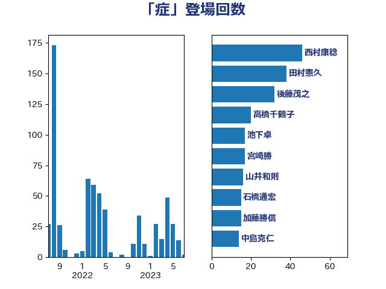

単語「症」

| 西村康稔 | 自由民主党 | 46 回 |
| 田村憲久 | 自由民主党 | 38 回 |
| 後藤茂之 | 自由民主党 | 32 回 |
| 高橋千鶴子 | 日本共産党 | 20 回 |
| 池下卓 | 日本維新の会 | 17 回 |
| 宮崎勝 | 公明党 | 17 回 |
| 山井和則 | 立憲民主党 | 16 回 |
| 石橋通宏 | 立憲民主党 | 15 回 |
| 加藤勝信 | 自由民主党 | 15 回 |
| 中島克仁 | 立憲民主党 | 14 回 |
| 塩川鉄也 | 日本共産党 | 13 回 |
| 宮本徹 | 日本共産党 | 11 回 |
| 長妻昭 | 立憲民主党 | 9 回 |
| 福島伸享 | 無所属 | 9 回 |
| 宮本岳志 | 日本共産党 | 9 回 |
| 山田勝彦 | 立憲民主党 | 8 回 |
| 小西洋之 | 立憲民主党 | 8 回 |
| 川田龍平 | 立憲民主党 | 7 回 |
| 山下芳生 | 日本共産党 | 7 回 |
| 伊佐進一 | 公明党 | 7 回 |
| 仁木博文 | 無所属 | 7 回 |
| 高木真理 | 立憲民主党 | 6 回 |
| 阿部弘樹 | 日本維新の会 | 6 回 |
| 舩後靖彦 | れいわ新選組 | 6 回 |
| 秋野公造 | 公明党 | 6 回 |
| 打越さく良 | 立憲民主党 | 6 回 |
| 山本香苗 | 公明党 | 6 回 |
| 田村智子 | 日本共産党 | 5 回 |
| 柚木道義 | 立憲民主党 | 5 回 |
| 岸田文雄 | 自由民主党 | 5 回 |
| 佐藤英道 | 公明党 | 5 回 |
| 三ッ林裕巳 | 自由民主党 | 5 回 |
| 稲津久 | 公明党 | 4 回 |
| 福島みずほ | 社会民主党 | 4 回 |
| 小沼巧 | 立憲民主党 | 4 回 |
| 小川淳也 | 立憲民主党 | 4 回 |
| 鰐淵洋子 | 公明党 | 3 回 |
| 高橋光男 | 公明党 | 3 回 |
| 自見はなこ | 自由民主党 | 3 回 |
| 石田昌宏 | 自由民主党 | 3 回 |
| 石垣のりこ | 立憲民主党 | 3 回 |
| 浜口誠 | 国民民主党 | 3 回 |
| 東徹 | 日本維新の会 | 3 回 |
| 山添拓 | 日本共産党 | 3 回 |
| 天畠大輔 | れいわ新選組 | 3 回 |
| 倉林明子 | 日本共産党 | 3 回 |
| 世耕弘成 | 自由民主党 | 3 回 |
| 遠藤敬 | 日本維新の会 | 2 回 |
| 藤井一博 | 自由民主党 | 2 回 |
| 矢倉克夫 | 公明党 | 2 回 |
| 玉木雄一郎 | 国民民主党 | 2 回 |
| 榛葉賀津也 | 国民民主党 | 2 回 |
| 松野明美 | 日本維新の会 | 2 回 |
| 杉尾秀哉 | 立憲民主党 | 2 回 |
| 山田太郎 | 自由民主党 | 2 回 |
| 山本太郎 | れいわ新選組 | 2 回 |
| 山本博司 | 公明党 | 2 回 |
| 尾崎正直 | 自由民主党 | 2 回 |
| 奥野総一郎 | 立憲民主党 | 2 回 |
| 大島九州男 | れいわ新選組 | 2 回 |
| 吉田統彦 | 立憲民主党 | 2 回 |
| 吉田久美子 | 公明党 | 2 回 |
| 古賀篤 | 自由民主党 | 2 回 |
| 古川俊治 | 自由民主党 | 2 回 |
| 下野六太 | 公明党 | 2 回 |
| 高橋克法 | 自由民主党 | 1 回 |
| 青柳陽一郎 | 立憲民主党 | 1 回 |
| 阿部知子 | 立憲民主党 | 1 回 |
| 鈴木宗男 | 日本維新の会 | 1 回 |
| 野田国義 | 立憲民主党 | 1 回 |
| 西村智奈美 | 立憲民主党 | 1 回 |
| 若松謙維 | 公明党 | 1 回 |
| 若宮健嗣 | 自由民主党 | 1 回 |
| 芳賀道也 | 国民民主党 | 1 回 |
| 羽田次郎 | 立憲民主党 | 1 回 |
| 竹谷とし子 | 公明党 | 1 回 |
| 福重隆浩 | 公明党 | 1 回 |
| 神谷政幸 | 自由民主党 | 1 回 |
| 石井苗子 | 日本維新の会 | 1 回 |
| 田村貴昭 | 日本共産党 | 1 回 |
| 田中健 | 国民民主党 | 1 回 |
| 生稲晃子 | 自由民主党 | 1 回 |
| 片山大介 | 日本維新の会 | 1 回 |
| 清水真人 | 自由民主党 | 1 回 |
| 水野素子 | 立憲民主党 | 1 回 |
| 武部新 | 自由民主党 | 1 回 |
| 柴田巧 | 日本維新の会 | 1 回 |
| 枝野幸男 | 立憲民主党 | 1 回 |
| 林芳正 | 自由民主党 | 1 回 |
| 松本尚 | 自由民主党 | 1 回 |
| 松島みどり | 自由民主党 | 1 回 |
| 岡本あき子 | 立憲民主党 | 1 回 |
| 山際大志郎 | 自由民主党 | 1 回 |
| 山田宏 | 自由民主党 | 1 回 |
| 山崎正恭 | 公明党 | 1 回 |
| 小池晃 | 日本共産党 | 1 回 |
| 小山展弘 | 立憲民主党 | 1 回 |
| 堀場幸子 | 日本維新の会 | 1 回 |
| 坂本祐之輔 | 立憲民主党 | 1 回 |
| 吉良よし子 | 日本共産党 | 1 回 |
| 吉田とも代 | 日本維新の会 | 1 回 |
| 伊藤孝江 | 公明党 | 1 回 |
| 今枝宗一郎 | 自由民主党 | 1 回 |
| 仁比聡平 | 日本共産党 | 1 回 |
| 井坂信彦 | 立憲民主党 | 1 回 |
| 井上哲士 | 日本共産党 | 1 回 |
| 中川郁子 | 自由民主党 | 1 回 |
| 上野賢一郎 | 自由民主党 | 1 回 |
| 三浦信祐 | 公明党 | 1 回 |
| 一谷勇一郎 | 日本維新の会 | 1 回 |